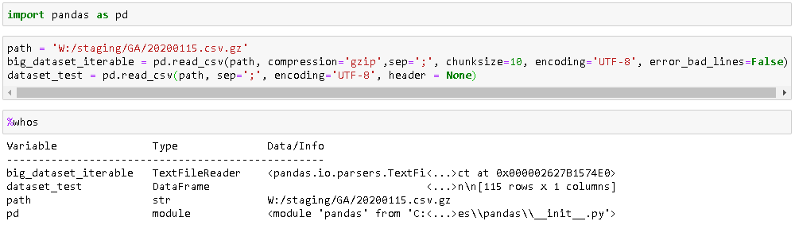

Una queja o comentario recurrente entre los usuarios que empiezan a usar los Jupyter Notebooks es la falta de informacion sobre las variables y funciones definidas en el entorno. Si te realizas esta pregunta, seguramente necesites informacion sobre el uso y el principal objetivo de estos notebooks, el cual es muy diferente al de IDEs como Spyder, Pycharm o RStudio.
Una vez que confirmamos que este tipo de notebooks son lo que necesitamos, existen diferentes maneras de mostrar esta información. La primera y más facil de ellas es mediante el método mágico %whos

Otras alternativas son, por un lado la extensión nbextension y dentro de Jupyter Lab el inspector de variables. Puedes encontrar más información aquí.